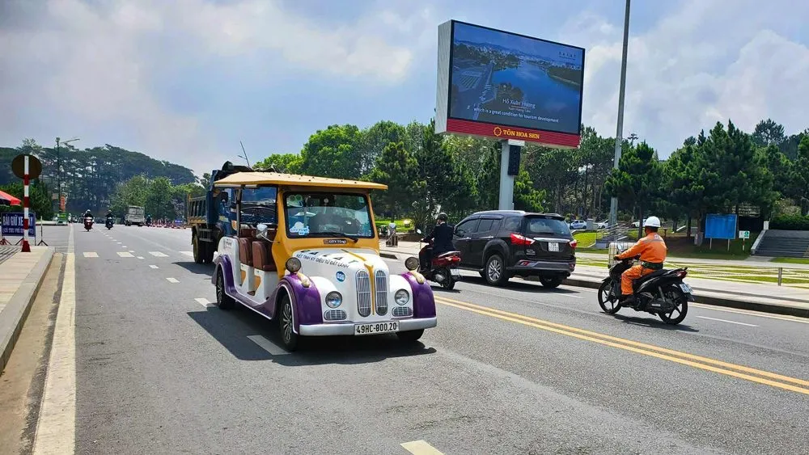
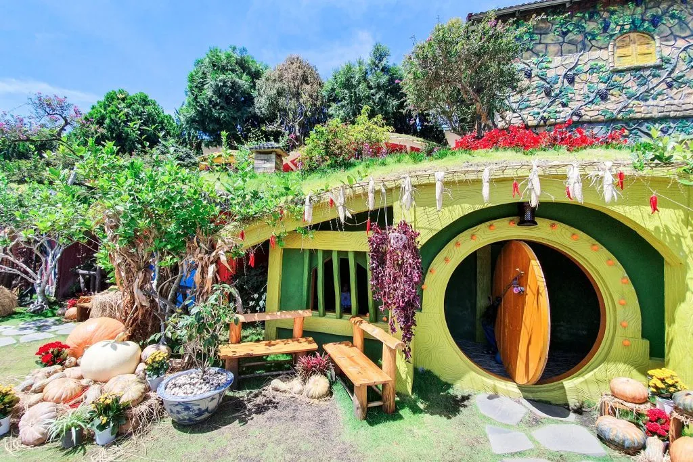
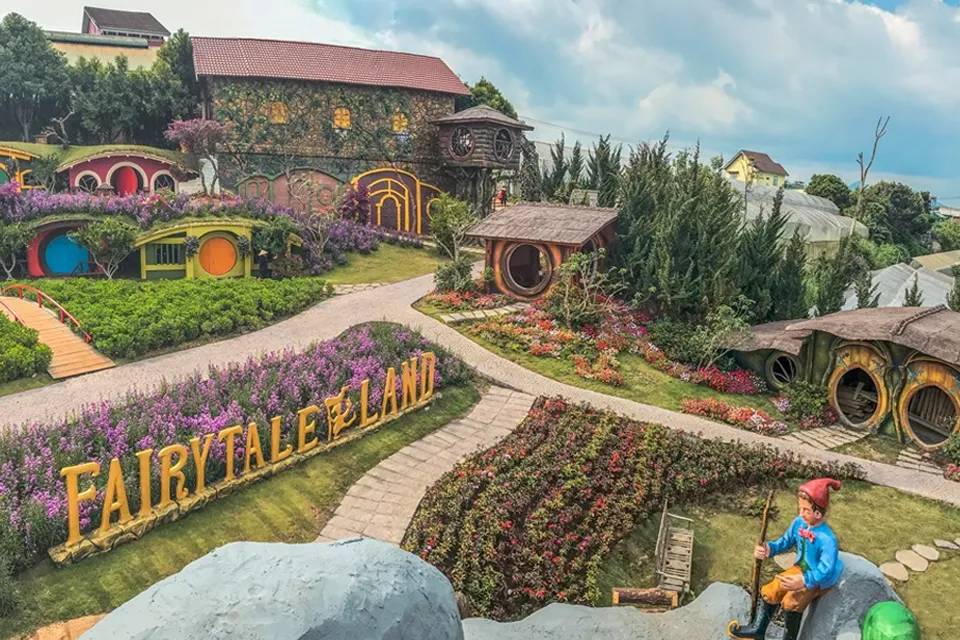
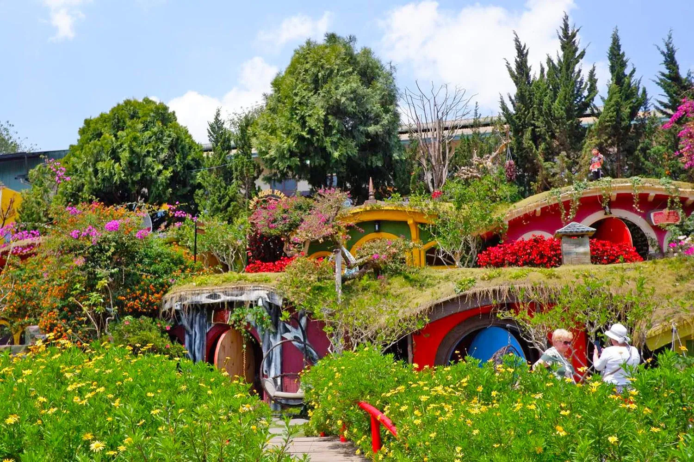
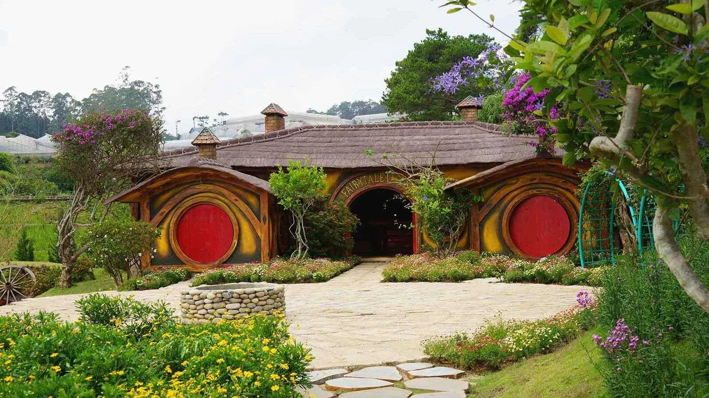

Dalat Fairytale Land 2025 - Bỏ túi kinh nghiệm vui chơi

Mục lục bài viết
- 1. Giới thiệu Dalat Fairytale Land – Khu vườn cổ tích giữa lòng Đà Lạt
- 2. Hướng dẫn chi tiết đường đi đến Dalat Fairytale Land
-
3. Dalat Fairytale Land có gì thú vị? Trải nghiệm hấp dẫn không nên bỏ lỡ
- 3.1 Hòa mình vào không gian cổ tích tại Dalat Fairytale Land
- 3.2 Khám phá thế giới cổ tích đầy mê hoặc tại Dalat Fairytale Land
- 3.3 Trải nghiệm các hoạt động vui chơi tại Dalat Fairytale Land
- 3.4 Kinh nghiệm vui chơi tại Dalat Fairytale Land: Đừng bỏ lỡ hầm rượu vang Vĩnh Tiến
- 3.5 Những địa điểm thú vị tại Dalat Fairytale Land bạn không nên bỏ lỡ
- 4. Một vài kinh nghiệm vui chơi tại Dalat Fairytale Land bạn nên biết
- 5. Gợi ý các điểm tham quan cùng tuyến đường với Dalat Fairytale Land
- 6. Đừng bỏ lỡ Tiệm Nướng & Chill Xóm Lèo – Điểm dừng ẩm thực sau hành trình Dalat Fairytale Land
Tọa lạc giữa lòng thành phố Đà Lạt mộng mơ, Dalat Fairytale Land đang dần trở thành điểm đến được nhiều bạn trẻ “săn đón” mỗi khi ghé thăm xứ sở sương mù. Với không gian được thiết kế theo phong cách cổ tích châu Âu, nơi đây khiến du khách như bước vào một thế giới thần thoại với những căn nhà Hobbit độc đáo, khu vườn hoa rực rỡ và vô số góc sống ảo đầy mê hoặc.

Mặc dù là “tân binh” trong danh sách điểm du lịch Đà Lạt, nhưng Dalat Fairytale Land đã nhanh chóng chiếm được cảm tình của du khách nhờ vào lối thiết kế khác biệt và không gian đầy cảm hứng. Dù bạn đi cùng hội bạn thân, người thương hay gia đình nhỏ, khuôn viên xinh đẹp này chắc chắn sẽ mang đến những trải nghiệm đáng nhớ.
1. Giới thiệu Dalat Fairytale Land – Khu vườn cổ tích giữa lòng Đà Lạt
Địa chỉ: 81D Hoàng Văn Thụ, Phường 5, Thành phố Đà Lạt
Thời gian mở cửa: 7h30 – 17h00
Giá vé tham quan:
-
Người lớn: 90.000 VNĐ
-
Trẻ em (cao từ 1m2 – 1m4): 40.000 VNĐ
Dalat Fairytale Land là một trong những địa điểm du lịch Đà Lạt được yêu thích nhất hiện nay, đặc biệt dành cho những ai yêu thích phong cách cổ tích phương Tây. Lấy cảm hứng từ những câu chuyện thần tiên, nơi đây mang đến khung cảnh như bước ra từ truyện cổ: những ngôi nhà tí hon, vườn hoa rực rỡ, các nhân vật thần thoại và không gian huyền bí. Nhờ sự đầu tư chỉn chu đến từng chi tiết, khu vườn cổ tích này nhanh chóng trở thành điểm check-in Đà Lạt “triệu like” được giới trẻ săn đón.
 Ảnh: Dalat Fairytale Land
Ảnh: Dalat Fairytale Land
Dalat Fairytale Land, ra mắt từ đầu năm 2019, nhanh chóng trở thành điểm đến “gây sốt” tại Đà Lạt nhờ thiết kế đậm chất cổ tích. Không gian rực rỡ, sinh động như trong truyện thần thoại đưa du khách bước vào một thế giới huyền bí và cuốn hút. Ngoài khung cảnh nên thơ, nơi đây còn có nhiều hoạt động giải trí phù hợp mọi lứa tuổi. Đây chắc chắn là điểm dừng chân lý tưởng cho chuyến đi Đà Lạt sắp tới.

2. Hướng dẫn chi tiết đường đi đến Dalat Fairytale Land
Dalat Fairytale Land tọa lạc ngay trong khu vực trung tâm thành phố Đà Lạt, vì vậy việc di chuyển đến đây khá thuận tiện và dễ dàng cho du khách.
Từ trung tâm thành phố, bạn khởi hành từ khu vực chợ Đà Lạt hoặc quảng trường Lâm Viên, băng qua cầu Ông Đạo, sau đó rẽ lên dốc Lê Đại Hành. Tiếp tục đi thẳng, bạn sẽ đi ngang qua nhà thờ Con Gà – một trong những công trình kiến trúc nổi tiếng của Đà Lạt. Tại ngã ba gần nhà thờ, rẽ phải theo hướng làng hoa Vạn Thành.

Khi di chuyển đến đường Cam Ly, bạn tiếp tục chạy khoảng 1km, chú ý bên tay trái sẽ thấy Hầm Rượu Vang Vĩnh Tiến – đây cũng chính là khu tổ hợp Dalat Fairytale Land. Khu du lịch nằm trong cùng một khuôn viên với hầm rượu nên rất dễ nhận biết. Đừng quên lưu địa chỉ này trên Google Maps để hành trình của bạn dễ dàng hơn nhé!
3. Dalat Fairytale Land có gì thú vị? Trải nghiệm hấp dẫn không nên bỏ lỡ
Chỉ với chi phí chưa đến 100.000 VND, bạn đã có thể bước vào thế giới cổ tích Dalat Fairytale Land – một trong những điểm check-in hấp dẫn bậc nhất Đà Lạt. Vé vào cổng đã bao gồm hướng dẫn viên đưa bạn khám phá toàn bộ khuôn viên, từ ngôi làng tí hon, hầm rượu vang cho đến khu trưng bày và bán đặc sản Đà Lạt độc đáo.

3.1 Hòa mình vào không gian cổ tích tại Dalat Fairytale Land
Dalat Fairytale Land là điểm đến lý tưởng cho những ai muốn “trốn” khỏi nhịp sống vội vã để tìm lại sự thư giãn và bình yên. Không gian nơi đây rộng rãi, được thiết kế như một ngôi làng trong truyện cổ tích với cây xanh, hoa cỏ rực rỡ và những tiểu cảnh xinh xắn. Những ngôi nhà tí hon dễ thương, nơi được ví như chốn sinh sống của người lùn, tạo nên khung cảnh độc đáo, sống động và cực kỳ thu hút.
Dalat Fairytale Land không chỉ là điểm chụp hình lý tưởng mà còn là nơi bạn có thể tận hưởng bầu không khí trong lành, hòa mình vào thiên nhiên và lưu giữ những khoảnh khắc đáng nhớ cùng người thân, bạn bè. Đây thực sự là một lựa chọn tuyệt vời cho chuyến du lịch Đà Lạt sắp tới của bạn.

3.2 Khám phá thế giới cổ tích đầy mê hoặc tại Dalat Fairytale Land
Dalat Fairytale Land không đơn thuần là điểm check-in đẹp mắt, mà còn là nơi tái hiện sống động một khu vườn cổ tích đúng nghĩa. Lấy cảm hứng từ hình ảnh những chú lùn Hobbit và các câu chuyện thần thoại phương Tây, chủ nhân nơi đây đã xây dựng nên không gian ngập tràn sắc hoa, cùng những ngôi nhà nấm độc đáo và lối kiến trúc châu Âu cổ kính.
Mỗi ngôi nhà trong khuôn viên đều được thiết kế như một khu tham quan riêng biệt, mang đến cảm giác mới lạ ở từng bước chân. Những mái nhà gỗ phủ màu thời gian, xen lẫn với vườn hoa rực rỡ tạo nên một bức tranh thiên nhiên yên bình, gần gũi và thơ mộng.

Không khí nơi đây gợi nhớ đến những câu chuyện cổ tích nổi tiếng như Bạch Tuyết và bảy chú lùn, nàng Lọ Lem hay công chúa ngủ trong rừng. Bạn sẽ bắt gặp hình ảnh những ngôi nhà nhỏ trên cây, con đường hoa thơm ngát, tủ sách cổ xưa hay những chiếc bàn bé xinh đầy tính nghệ thuật.
Đặc biệt, trong suốt hành trình khám phá Dalat Fairytale Land, bạn còn được đắm chìm trong nền nhạc du dương, nhẹ nhàng giúp xoa dịu tâm hồn và mang lại cảm giác thư thái, trọn vẹn như đang bước vào một thế giới mộng mơ ngoài đời thực.

3.4 Kinh nghiệm vui chơi tại Dalat Fairytale Land: Đừng bỏ lỡ hầm rượu vang Vĩnh Tiến
Một trải nghiệm độc đáo không thể bỏ qua khi đến Dalat Fairytale Land chính là khám phá hầm rượu vang Vĩnh Tiến – một điểm nhấn nổi bật trong khuôn viên khu du lịch. Nơi đây lưu trữ hơn 10.000 chai rượu vang với đa dạng hương vị, nguồn gốc và niên đại khác nhau, mang đến không gian đậm chất châu Âu giữa lòng Đà Lạt.

Giữa tiết trời se lạnh đặc trưng của thành phố ngàn hoa, việc nhâm nhi một ly rượu vang sẽ khiến chuyến đi của bạn thêm phần thư giãn và thi vị. Bạn có thể tham quan, tìm hiểu quy trình sản xuất rượu vang và thưởng thức những loại rượu đặc trưng mang thương hiệu Vĩnh Tiến – một trong những thương hiệu rượu vang nổi tiếng của Đà Lạt.
Với không gian ấm cúng, cổ điển cùng hương rượu nhẹ nhàng lan tỏa, hầm rượu vang tại Dalat Fairytale Land chắc chắn sẽ mang lại cho bạn một trải nghiệm khác biệt, vừa sang trọng, vừa sâu lắng giữa thiên nhiên trong lành của cao nguyên.

3.5 Những địa điểm thú vị tại Dalat Fairytale Land bạn không nên bỏ lỡ
Bên cạnh không gian cổ tích và hầm rượu vang nổi tiếng, Dalat Fairytale Land còn sở hữu nhiều địa điểm độc đáo, mỗi nơi mang một câu chuyện và dấu ấn riêng biệt.
Vọng Gác của người lùn sinh đôi là một trong những điểm nhấn ấn tượng. Được xây dựng từ gỗ sẫm màu và mô phỏng hình dáng cây cổ thụ, vọng gác nằm ở vị trí cao nhất trong khu làng, được bao phủ bởi dây leo tự nhiên. Đây là nơi làm việc của hai anh em sinh đôi cùng cô tiểu thư đa sầu, và cũng là điểm quan sát lý tưởng để ngắm toàn cảnh không gian thơ mộng xung quanh.

Một địa điểm khác không thể bỏ qua chính là Hồ Ước Nguyện và Cây Cầu Duyên, nằm giữa mặt hồ hình trái tim vô cùng lãng mạn. Du khách thường đến đây để gửi gắm những lời cầu chúc may mắn, bình an hay mong ước tình duyên thuận lợi.
Cuối hành trình, bạn có thể ghé qua Ngôi nhà chung của Dalat Fairytale Land – nơi trưng bày và bán các món quà lưu niệm độc đáo, mang đậm chất Đà Lạt. Đây là nơi lý tưởng để bạn chọn cho mình những món quà nhỏ xinh gửi tặng người thân và lưu giữ kỷ niệm đáng nhớ từ chuyến tham quan.
4. Một vài kinh nghiệm vui chơi tại Dalat Fairytale Land bạn nên biết
Để chuyến tham quan Dalat Fairytale Land thêm trọn vẹn, bạn đừng bỏ qua những lưu ý quan trọng dưới đây:
-
Lên kế hoạch tuyến đường trước khi đi để tránh lạc đường và tiết kiệm thời gian.
-
Nếu không quen chạy xe máy, bạn có thể chọn taxi, xe ôm công nghệ hoặc xe trung chuyển riêng để di chuyển thuận tiện hơn.
-
Nên đi vào những ngày nắng đẹp, trời khô ráo để thoải mái tham quan và chụp ảnh.
-
Chuẩn bị kem chống nắng, thuốc xịt côn trùng và xịt muỗi để bảo vệ sức khỏe khi ở ngoài trời lâu.
-
Mang theo áo mưa hoặc dù nhỏ, phòng khi thời tiết Đà Lạt bất chợt đổ mưa.
-
Tuân thủ nội quy khu du lịch, không xả rác và không làm hư hại tiểu cảnh để giữ gìn cảnh quan chung.
Những mẹo nhỏ này sẽ giúp chuyến đi của bạn đến Dalat Fairytale Land thêm suôn sẻ, an toàn và đáng nhớ!

5. Gợi ý các điểm tham quan cùng tuyến đường với Dalat Fairytale Land
Nếu bạn đang lên lịch trình khám phá khu vực phía Tây Đà Lạt, thì Dalat Fairytale Land là điểm dừng chân lý tưởng kết hợp với nhiều địa danh nổi tiếng lân cận. Dưới đây là danh sách những địa điểm nằm cùng tuyến đường, giúp bạn tiết kiệm thời gian di chuyển và có chuyến đi trọn vẹn hơn:
-
Khu du lịch Rau & Hoa Đà Lạt: Nơi bạn có thể tìm hiểu về nông nghiệp công nghệ cao và chụp hình cùng những luống rau xanh mát.
-
Fresh Garden Đà Lạt: Khu vườn rực rỡ sắc hoa với tiểu cảnh bắt mắt, rất thích hợp để chụp ảnh check-in.
-
Hoa Sơn Điền Trang: Nổi tiếng với bàn tay Phật khổng lồ và khung cảnh thiên nhiên hoang sơ, yên bình.
-
Cà phê Mê Linh: Quán cà phê view đồi núi tuyệt đẹp, nổi tiếng với cà phê chồn và khu vườn hoa rực rỡ.
-
Thác Voi Đà Lạt: Một trong những ngọn thác lớn và hùng vĩ nhất khu vực, thích hợp cho những ai yêu thích thiên nhiên hoang dã.
-
Chùa Linh Ẩn: Ngôi chùa linh thiêng với tượng Quan Âm cao hơn 70m, thu hút đông đảo du khách và Phật tử ghé thăm.